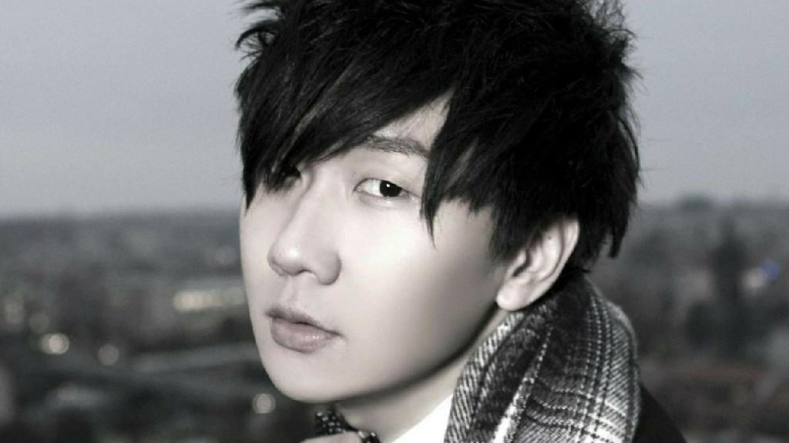

林俊杰
英文名 JJ
Lin，1981年3月27日出生于新加坡，祖籍中国福建省厦门市同安区，华语流行乐男歌手、作曲人、音乐制作人、潮牌主理人。
重要事件
- 2003年发行首张创作专辑《乐行者》。
- 2004年凭借专辑《第二天堂》中的主打歌《江南》获得广泛关注。
-
2007年成立个人音乐制作公司JFJ Productions。
- 2008年创立潮流品牌SMG。
- 2014年凭借专辑《因你而在》夺得第25届台湾金曲奖最佳国语男歌手奖。
-
2016年凭借专辑《和自己对话》获得第27届台湾金曲奖最佳国语男歌手奖,并推出个人首部音乐纪录片《听·见林俊杰》。
- 2017年成立“SMG”电竞战队。
-
2020年1月28日，为向武汉防疫前线人员致敬，与孙燕姿合作创作单曲《Stay With
You》MV发布 。
近期成就和荣誉
-
2018-04-15 第22届全球华语榜中榜暨亚洲影响力大典 Channel
V国际最受欢迎华语艺人
-
2017-09-03 第22届 新加坡词曲版权协会奖 年度本地歌手
-
2017-07-19 ———2017亚洲金曲大赏港台最佳男歌手
-
2017-04-08 第05届音悦V榜年度盛典 年度最具人气艺人（港台）
-
2016-12-02 第18届2016MAMA亚洲音乐盛典 亚洲年度最佳艺人（新加坡）
-
2016-10-19 第16届全球华语歌曲排行榜 新加坡杰出歌手
-
2016-06-25 第27届台湾金曲奖最佳国语男歌手
-
2016-06-05 第14届 台湾Hito流行音乐奖 Hito制作人
- 2016-04-15 第20届 全球华语音乐榜中榜 亚洲影响力最受欢迎歌手
主要作品
| 序号 |
作品 |
| 01. |
曹操 |
| 02. |
江南 |
| 03. |
小酒窝 |
| 04. |
一千年以后 |
| 05. |
Always on line |
| 06. |
背对背拥抱 |
| 07. |
记得 |
| 08. |
爱笑的眼睛 |
| 09. |
美人鱼 |
| 10. |
修炼爱情 |
| 11. |
我还想她 |
| 12. |
黑暗骑士 |
生活照

早年经历
1981年3月27日，林俊杰出生于新加坡的一个音乐世家。虽然从4岁就开始学习古典钢琴，但严格来说他并非音乐科班，而是美术科班出身。小时候的林俊杰把哥哥当作偶像，跟随哥哥的步伐做任何事，直到接触流行音乐后，便爱上创作这一条路。
1996年，林俊杰开始参加各种歌唱比赛，前后获得多个词曲创作和演唱大奖。1999年，海蝶音乐在“非常歌手训练班”发现了他。这个腼腆害羞、并不起眼的高中生，却在自弹自唱的时候，展现了对音乐的纯真热忱。当时学习成绩优异的林俊杰，在已收到新加坡国立大学入学通知的情况下，放弃升学，与海蝶签下一纸合约，从此开启了他的音乐道路。
新加坡男性均须服兵役，林俊杰亦不例外。由于专长，他加入的是新加坡武装部队文工团。服兵役期间，他积累了大量的舞台表演经验，同时也尝试了无数创作。尽管早期屡遭“打枪”，但在老师的正确引导鼓励下，极具天赋又非常努力的他，终于谱出了令老师首肯的曲子，这便是2001年收录在张惠妹专辑里的《记得》。此后，林俊杰为庾澄庆、阿杜、王心凌等人创作多首主打歌曲，他的创作才华终于得以展示。